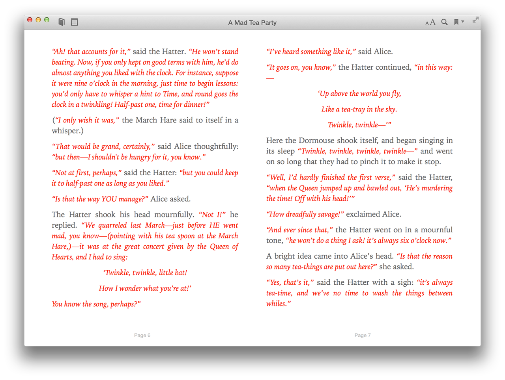
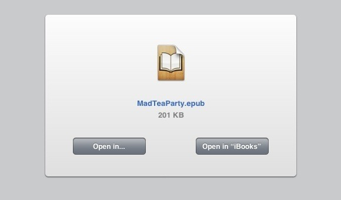
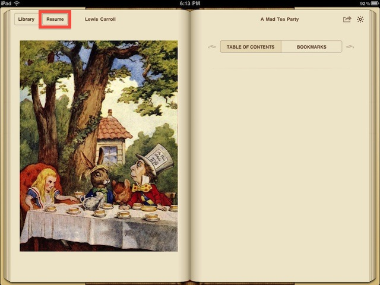
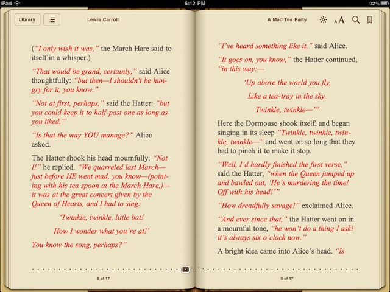

Once you’ve created the EPUB document, it will automatically be opened in the iBooks application (⬇ see below ) (click image to view at larger size)

As you can see from the image above, much of the formatting of the source text used in the creation the publication is retained, such as the italic styling and color formatting, as well as the centering and indentation of certain paragraphs. Also note that the document is a single chapter.
For your convienience, you can DOWNLOAD the finished example EPUB document.
There are multiple options for transfering the created EPUB publication to an iPhone or iPad for viewing in iBooks.
- One option is to connect to the devices using iTunes and transfer the created publication file to the connected devices.
- Another option is to include the created files as attachments to messages sent to the mail accounts on your iOS devices. Tap and hold on the attachment and choose “Open in iBooks” from the forthcoming contextual menu.
- To view from another device like an iPad, you can click THIS LINK to send yourself an email message that contains the link to the finished EPUB document.
- However, an easier option is to view this webpage in Safari on the iPad or iPhone, and then tap this link: MAD TEA PARTY EPUB
In the forthcoming menu, tap the Open in “iBooks” button:

Once the created EPUB file has been transfered to iBooks, it will appear on the bookshelf in the same manner as other digital publications. Open the book by tapping its cover image displayed on the bookshelf:

(⬆ see above ) The newly created book appears on the iBooks bookshelf.
The book will open to its table of contents, which in the case of a single-chapter book, is empty. Tap the Resume button at the top left of the window to begin reading the book:

(⬆ see above ) Since the created book only has one chapter, there is no table of contents. Tap the Resume button at the top left (outlined here in red) to begin or continue reading the book.
Note that although you can assign a different typeface and size to the text, the color, style, spacing, and alignment are the same as the original text from the webpage:

(⬆ see above ) Since the source text for the digital book was in Rich Text format, the text color, style, and alignment properties are retained. In iBooks, the font and type size can be set by the user.